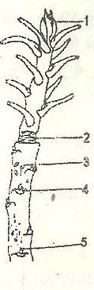
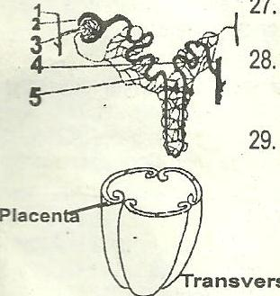
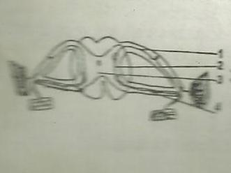
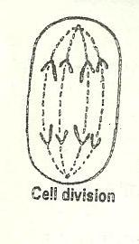
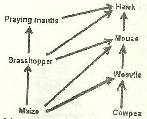

BIOLOGY U. M. E. 1990
1.
Viruses are considered to be living organisms because they
A.
possess iransmittable characters B. move from one place to another C. respond to
stimulation D.
ingest food materials.
2.
Which of the following characteristics is common to Amoeba and Paramecium
A.
Oral groove. B.
Trichocyst. C.
Contractile vacuote. D. Cilia.
3.
Hydrs removes undigested food by
A.
passing it through the anus B. passing it through the mouth
C.
means of a contractile vacuole D. egesting it through the body surface.
4.
Which of the following groups of invertebrates reproduces by budding ?
A.
Arthropoda. B.
Annelida. C.
Mollusca. D. Coelenterata.
5.
The algae, bryophytes and pteridophytes are similar in that they
A.
Are sea weeds B.
Have no vascular tissues C. Require moisture for
fertilization D.
Aremicroscopicplants.
6.
The spores of ferns are dispersed by
A.
wind B.
water C.
Insects D. explosive mechanism
7.
In bryophytes, sex organs are produced in the
A.
Gametophyte B.
Rhizoid C.
Protonema D.
Sporophyte
Use the figure below to answer questions 8 and 9.

8.
The part labeled 3 is the
A.
Leaf scar B. Lenticel C. auxillary bud D. girdle scar
9. Which part of the twig produces auxins?
A.
4 B.3 C.
2 D.
1
10. Which of the following animals has homodont den
A.
Rat B. Man C. lizard D. Pigeon.
11. In which of the following does external fertilization take place?
A.
Toad. B. Lizard C.
Bird. D. Cockroach.
12. In the tapeworm, the suckers 0,1 the scolex are used for
A. sucking the blood of the host B. holding fast to the
C. reproduction D. Locomotion.
13.
A feature which adapts birds to flight is the possession of
A. scaly legs B. light bones C. two walking legs D. a pointed beak
14. The nephridia in the earthworm form part of the
A. reproductive system B. respiratory system C. circulatory system D. excretory
system
15.
Which of the following diseases is rarely spread by a housefly?
A. Yellow fever B. Dysentry C. Typhoid fever D. Poliomyelitis
16. Which of the following cells is thin-walfed and living at maturity?
A.
Collenchyrna. B. Sieve tube C. Xylem vessel D. Sclerenchyma.
17.
The mode of nutrition in which digestion is extra-cellular is
A. holopjiyt'c B. Parasitic C. holozcic D. Saprophytic
18. The first step in toe process of photosynthesis is the
A. activation of the chlorophyll B. photolysis of water C. reduction of carbon dioxide D.
formation of sugar
19.
Which of the following food substances will produce a brick-red colour when warmed
with Benedict's solution
A. Glucose B. Starch C. Egg white D. Maltose
20. The organ which secretes digestive enzymes as well as a hormone is the
A. liver B. salivary gland C. pancreas D. Spleen
21. The villus in the small intestine is significant because it
A. increases the surface area for absorption B. increases the surface area for digestion C.
assists in mixing digested food D. assists in filtering undigested food
22.
If a ring of bark and phloem is removed from a stem, the
A. plant dies immediately B. plant dies after two days
C. movement of food is hot affected D. movement of mineral salts is hardly affected
23.
Transpiration can be measured with a
A. photometer B. hygrometer C.potometer D. Barometer
24. Excretory products responsible for the red, purple and blue colours of flowers are called
A. alkaloids B. Tannins C. anthocyanins D. Resins
25. Etiolation is caused by the influence of
A. mineral salts B. Water C. carbon dioxide D. Light
26. Muscles are indirectly attached to bones by means of
A. ligaments B. Membranes C. Tendons D. Sutures
Use the figure below to answer questions 27 and 28

27.
Which structure is the glomerulus?
A. 5 B. 3 C. 2 D. 1
28. If the blood is too concentrated, more water is absorbed from
A. 5 B. 4 C. 3 D. 1
29.
During mammalian embryo development, large amounts of oestrogen and progesterone
are produced in the
A. umbilical cord B. amnion C. placenta D. amniotic fluid
ransverse section of an ovary
30.
The type of placentation shown in the figure above is
A. parietal B. marginal C. axile D. free central
31. Fruits which develop without fertilization are described as
A, simple B. pathenocarpic C. aggregate D. Compound
32. The elephant grass is propagated vegetatively by means of
A. corms B. bulbs C. suckers D. stolons

Use the figure below to answer questions 33 and 34
33. All the cell bodies in the spinal cord are found in
A. 1 B. 2 C. 3 D. 4
34. In a reflex actions, impulse flows from
A. 1 to 2 B. 2 to 1 C. 4 to l D. 4to2
35. The part of the ear that is concerned with balance is the
A. Semi-drcularcanais B. Incus C. malleus D. Eustachian tube
36.
In an organism where the 2n number of chromosome is 16, the number of chromosomes
in each gamete will be
A. 32 B. 16 C. 8 D.4
37.
What would be the result of the first filial generation (F,) and the second filial generation
(FJ of a mono-hybrid cross between pure line normal-winged Drosophila flies and pure
line short-winged flies, if the gene for the normal wing is dominant?
A.
F. flies all short-winged and F, flies ail normal-winged.
B. F, flies all normal-winged and F2 flies all short-winged.

C.
F, flies all short-winged and three-quarters of Fz flies are short-winged.
D.
F, flies all normal winged and three-quarters of F. flies are normal-winged
38.
What stage during cell division is represented in the figure above? A.Prophase B.
Metaphase C. Anapha D. Telophase
39.
An Individual in the AB blood group is a universal recipient for blood donation because
A. all the red blood cells do not carry antigen B. all the red blood cells carry antigen A C. all
the red blood cells carry antigen B D. there are no anti-Aand anti-B antibodies in the serum
40.
Haemophilia results from the mutation of the genes
A. in the sex chromosomes B. which skin colour C. which control the mechanism for blood-
clotting D. which control the formation of haemoglobin
41 . In a savanna ecosystem, the abiotic factors include
A. legumes, temperature and sandy soil B. water, temperature and soil
C. minerals, oxygen and reptiles D. Water, soil and grasses

Use the diagram below to answer questions 42 and 43
42. Which organism is an omnivore?
A. Praying mantis C. Mouse B. Hawk D. Grasshopper
43. Which of the organisms will have the lowest population in an ecosystem?
A. Hawk. B. Cowpea C. Praying mantis D. Mouse
44.
The salinity of a brackish environment
A. increases immediately after rain B. increases at the end of the rainy season C.
decreases with increase in micro-organisms
D. increases during the dry season.
45. Physiological adaptation to very dry condition in animals is called A. hibernation B.
Aestivation C. rejuvenation D. Xeromorphism
46.
Which set of diseases is spread mainly by insect vectors?
A. Cholera, tinia and gonorrhoea, B. Poliomyelitis, tuberculosis and syphilis C. Cholera,
malaria and tuberculosis D. Malaria, cholera and river blindness.
47.
Which of the following constitutes pollution?
A. Droppings from birds B. Loud disco music C. A pack of cigarettes. D. Refuse
in an incinerator.
48. An acidic soil can be improved upon by
A. sedimentation B. Leaching C. flocculation D. Watering
49.
What do bacteria in root nodules derive from the host plant?
A. Protection and minerals B. Water and minerals
C. Carbohydrates and water D. Protection and carbohydrates.
50.
Free nitrogen is released to the atmosphere by
A. nitrogen fixing bacteria B. nitrifying bacteria C. denitrifying bacteria D. saprophytic
bacteria